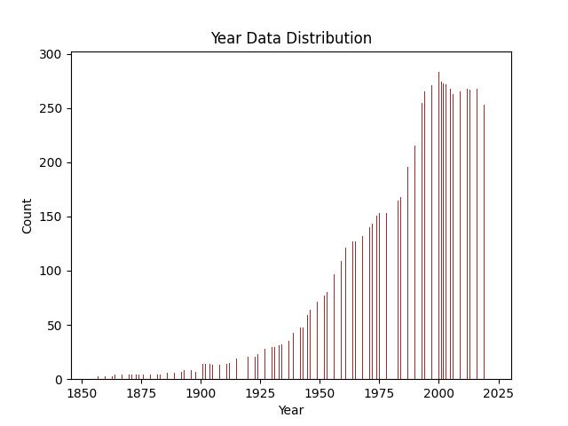

Background and Goals
First I took a look at the general information surrounding the data.
I used the following code for this step:
pd.options.display.max_columns = None
df = pd.read_csv("emissions_high_granularity.csv")
print(df.head())

Next I did some univariate analysis to see what I am working with, starting with "Year" variable.
years = df['year']
plt.figure()
plt.hist(years, bins = 1000, color='brown')
plt.title('Year Data Distribution')
plt.xlabel('Year')
plt.ylabel('Count')
plt.show()
Clearly there is a lot more data available in later years. This is important to think about because availability of data could lead to misinformed conclusions about trends. For example, before 1950, there may have been less data collection, so the data from that time period may reflect less emissions than there actually were. While we could easily sum up the emissions from this data over time and call that the trend of how emissions have increased over time, AND it would be intuitive to believe that emissions have increased over time, we have to understand that our data may not necessarily reflect a whole picture of emissions way far back in time.
Then I looked at the different emission types.
years = df['year']
tot_product = df['product_emissions_MtCO2'].sum()
tot_flaring = df['flaring_emissions_MtCO2'].sum()
tot_venting = df['venting_emissions_MtCO2'].sum()
tot_own_fuel = df['own_fuel_use_emissions_MtCO2'].sum()
tot_fugitive = df['fugitive_methane_emissions_MtCO2e'].sum()
tot_oper = df['total_operational_emissions_MtCO2e'].sum()
emissions = [tot_product, tot_flaring, tot_venting, tot_own_fuel, tot_fugitive, tot_oper]
labels = ['Product', 'Flaring', 'Venting', 'Own Fuel Use', 'Fugitive Methane', 'Total Operational']
color = ['lightblue', 'blue', 'purple', 'red', 'black','pink']
fig, ax = plt.subplots()
ax.bar(labels, emissions, color = color)
plt.xlabel('Emissions Type')
plt.ylabel('Amount (PPM)')
plt.title('Emissions Sorted by Emission Type')
plt.tight_layout()
plt.show()